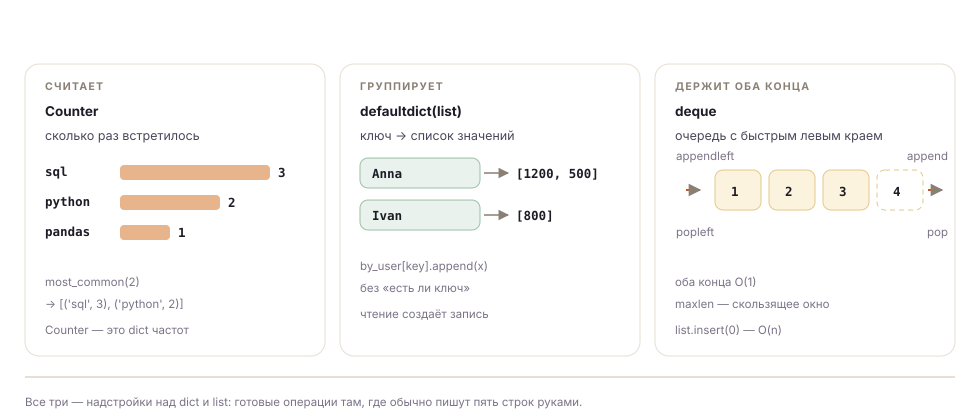

Counter, defaultdict, deque: три специнструмента Готовые операции там, где обычно пишут пять строк руками
Это не новые структуры данных, а три надстройки над dict и list:
счётчик частот, блокнот с автоматическими группами и очередь, у которой оба конца быстрые.
Их знание на собеседовании сразу отделяет «читал учебник» от «писал код».
Словарь главы — если забыли термины
- Counter
- Словарь частот: ключ — элемент, значение — сколько раз встретился.
- most_common(n)
- Возвращает n самых частых элементов в порядке убывания.
- defaultdict
- Словарь с фабрикой значений: отсутствующий ключ создаётся сам.
- __missing__
- Метод, который вызывается при чтении отсутствующего ключа.
- deque
- Двусторонняя очередь: добавление и удаление с обоих концов за O(1).
- maxlen
- Ограничение длины deque: старые элементы вытесняются сами.
01Зачем это backend-разработчику
Эти три класса закрывают три самые частые операции над данными. Без них код работает, но получается длиннее и медленнее — а на ревью начинаются вопросы «почему не Counter?».
- Counter — топ-N значений, частотный анализ, «самый частый город/товар/ошибка». Одна строка вместо словаря с
get. - defaultdict — группировка записей по ключу: заказы по пользователям, события по дням, товары по категориям.
- deque — очередь задач, буфер последних N событий, rate limiting, обход в ширину. Всё, где важны оба конца.
- Собеседование: «чем Counter лучше dict?», «что делает defaultdict при чтении?», «почему deque, а не list?» — проверяют, знаете ли вы стандартную библиотеку.
Counter и defaultdict — подклассы dict.
Гардероб с номерками никуда не делся: просто у него появились готовые сценарии использования.
02Ассоциация-якорь: ящик с тремя инструментами
Counter — счётчик с табло. Каждый раз, когда видите слово, щёлкаете по нему — и на табло прибавляется единица. Потом можно спросить: «что чаще всего?».
defaultdict — блокнот с предзаполненными страницами. Открываете страницу «Anna» — а там уже пустой список, в который можно писать. Не нужно проверять, заведена ли страница.
deque — вагон с двумя дверями. Войти и выйти можно с любого конца, и обе двери работают одинаково быстро. У списка задняя дверь быстрая, а передняя — нет.
03Ассоциативный ряд: восемь звеньев
- Counterсчётчик частот, подкласс dict
- most_commonтоп-N за один вызов
- Арифметика+ − & | как над мультимножествами
- defaultdict(int)счётчик без проверок
- defaultdict(list)группировка в список
- __missing__чтение создаёт запись
- dequeоба конца O(1)
- maxlenскользящее окно без ручной чистки
04Схема: три инструмента и их форма данных

05Как это устроено на самом деле
Counter — словарь, который разрешает отсутствующие ключи
Counter наследуется от dict и переопределяет
__missing__: обращение к отсутствующему ключу возвращает 0,
но не создаёт его. Поэтому counts["missing"] не падает — и поэтому же
"missing" in counts остаётся False.
Считать он умеет не только частоты: +, -,
&, | работают как операции над мультимножествами (multiset — элементы с кратностями: каждый со своим счётчиком).
При вычитании нулевые и отрицательные счётчики исчезают — это удобно, но иногда удивляет.
defaultdict — фабрика значений
При обращении d[key] вызывается фабрика (например, list),
результат вставляется в словарь и возвращается. Именно поэтому группировка пишется одной строкой.
Важно: d.get(key) фабрику не вызывает и ничего не вставляет.
deque — двусвязный список блоков
Внутри не непрерывный массив, а связная структура блоков. Поэтому appendleft и
popleft — O(1), тогда как у списка вставка в начало — O(n). Обратная сторона:
доступ по индексу в середине — O(n), срезы не поддерживаются, а память на элемент больше.
| Задача | Без инструмента | С инструментом |
|---|---|---|
| Частоты | dict + get или setdefault | Counter(iterable) |
| Топ-N | sorted(...)[:n] | most_common(n) |
| Группировка | if key not in d: d[key] = [] | defaultdict(list) |
| Очередь | list.insert(0) / pop(0) | deque.appendleft / popleft |
| Последние N событий | ручное удаление старых | deque(maxlen=N) |
06Лаборатория: запустить и увидеть
Фрагменты файла 06_collections_lab.py.
Время зависит от машины, поведение — нет.
Шаг 1. Counter: частоты и топ-N
from collections import Counter words = ["sql", "python", "sql", "pandas", "python", "sql"] counts = Counter(words) print(dict(counts)) print(counts.most_common(2)) print(counts["missing"], "missing" in counts)
0 и False в одной строке — главная тонкость:
отсутствующий ключ читается как ноль, но не появляется в словаре.
Шаг 2. Арифметика Counter
a = Counter({"python": 3, "sql": 1})
b = Counter({"python": 1, "sql": 2})
print(dict(a + b)) # {'python': 4, 'sql': 3}
print(dict(a - b)) # {'python': 2} — нули и минусы исчезают
print(dict(a & b)) # минимум
print(dict(a | b)) # максимум
Шаг 3. defaultdict: группировка и ловушка чтения
from collections import defaultdict
orders = [
{"user": "Anna", "amount": 1200},
{"user": "Ivan", "amount": 800},
{"user": "Anna", "amount": 500},
]
by_user = defaultdict(list)
for order in orders:
by_user[order["user"]].append(order["amount"])
print(dict(by_user))
d = defaultdict(int)
print(d.get("x"), "x" in d) # None False — get не создаёт
print(d["x"], "x" in d) # 0 True — чтение создало ключ
Шаг 4. deque: оба конца и скользящее окно
from collections import deque
q = deque([1, 2, 3])
q.appendleft(0)
q.append(4)
print(q) # deque([0, 1, 2, 3, 4])
print(q.popleft(), q.pop())
window = deque(maxlen=3)
for value in range(6):
window.append(value)
print(value, "→", list(window))
Шаг 5. Почему deque, а не list
import time
from collections import deque
n = 100_000
lst, dq = [], deque()
t0 = time.perf_counter()
for i in range(n):
lst.insert(0, i) # сдвиг всего массива, O(n)
t1 = time.perf_counter()
for i in range(n):
dq.appendleft(i) # O(1)
t2 = time.perf_counter()
print(f"list.insert(0): {(t1 - t0) * 1000:6.1f} ms")
print(f"deque.appendleft: {(t2 - t1) * 1000:6.1f} ms")
Разница в 300 раз — та же причина, что в главе 03: у списка элементы лежат подряд, и вставка в начало двигает весь массив. У deque левый край — полноценная дверь.
Шаг 6. Counter быстрее ручного словаря
import random
import time
from collections import Counter
data = [random.randint(0, 20_000) for _ in range(300_000)]
t0 = time.perf_counter()
manual = {}
for x in data:
manual[x] = manual.get(x, 0) + 1
t1 = time.perf_counter()
fast = Counter(data)
t2 = time.perf_counter()
print(f"dict.get: {(t1 - t0) * 1000:.1f} ms")
print(f"Counter : {(t2 - t1) * 1000:.1f} ms")
print("результаты совпали:", manual == dict(fast))
Counter реализован на C и делает то же самое за половину времени. На 300 000 элементов экономия — миллисекунды; на больших объёмах она становится заметной.
07Мост: где эти инструменты живут в pandas и SQL
pandas: value_counts и groupby
import pandas as pd
df = pd.DataFrame({"user": ["Anna", "Ivan", "Anna"], "amount": [1200, 800, 500]})
df["user"].value_counts() # Counter: ключ → частота
df.groupby("user")["amount"].sum() # defaultdict: ключ → группа
df.groupby("user").size() # количество по группам
value_counts возвращает Series с индексом-ключом и значениями-частотами,
отсортированную по убыванию — ровно most_common(), но таблично.
SQL: GROUP BY и LIMIT
-- Counter: частоты SELECT city, COUNT(*) AS cnt FROM users GROUP BY city ORDER BY cnt DESC LIMIT 3; -- defaultdict(list): группы SELECT user_id, array_agg(amount) FROM orders GROUP BY user_id; -- deque: последние N событий (без разбивки по пользователям) SELECT * FROM events ORDER BY created_at DESC LIMIT 10;
GROUP BY — тот же аккумулятор по ключу, только внутри базы.
А скользящее окно на стороне приложения часто пишут через deque(maxlen=N).
Реальный код: rate limiting на deque
from collections import deque
from time import monotonic
class RateLimiter:
def __init__(self, limit=5, window=60):
self.limit, self.window = limit, window
self.hits = deque()
def allow(self) -> bool:
now = monotonic()
while self.hits and now - self.hits[0] > self.window:
self.hits.popleft()
if len(self.hits) >= self.limit:
return False
self.hits.append(now)
return True
Это не учебный пример: так действительно делают ограничители запросов в небольших сервисах.
Ветка while ... popleft() и есть «дверь» deque.
08Шесть ошибок, на которых спотыкаются
if d[key]: или отладочный print(d[key]) добавляет ключ в словарь. После этого key in d истинно, а len(d) вырос.
d.get(key); для накопления — осознанно d[key].Вычитание оставляет только положительные счётчики: пары с нулём и минусом исчезают. Код, ожидающий все ключи, ломается.
dq[1:3] → TypeError: deque не поддерживает срезы, только индексацию за O(n).
list(dq)[1:3] (копия) или itertools.islice(dq, 1, 3).deque(iterable, maxlen=3) без предупреждения оставит только последние три элемента. Данные теряются; это допустимо, только если окно — часть замысла.
Counter не хранит нули: после вычитания ключ исчезает. Поэтому "" in counts — проверка наличия ключа, а не «счётчик больше нуля».
counts.get(key, 0) > 0.defaultdict(lambda: []) — нормально, а defaultdict(lambda: shared) подставит один список во все ключи.
list, int, set.09Вопросы с собеседования
Чем Counter отличается от обычного dict?
Counter — подкласс dict, который считает частоты: отсутствующий ключ читается как 0 без KeyError, есть most_common(), total() и арифметика над мультимножествами. Внутри — та же хеш-таблица.
Что делает defaultdict при обращении к отсутствующему ключу?
Вызывает фабрику, вставляет результат в словарь и возвращает его. Поэтому чтение меняет словарь. get() так не делает.
Чем deque отличается от list?
deque оптимизирован для операций с двух концов: appendleft/popleft — O(1), у списка вставка в начало — O(n). Зато у списка быстрый доступ по индексу и срезы, а у deque индексация — O(n).
Зачем deque(maxlen=N)?
Автоматическое скользящее окно: при добавлении сверх N элемент с противоположного конца удаляется. Удобно для последних N событий, буферов логов, rate limiting.
Как посчитать частоты без Counter?
d[x] = d.get(x, 0) + 1 или defaultdict(int). Counter короче и быстрее — реализован на C.
Когда defaultdict хуже обычного dict?
Когда отсутствие ключа — значимая информация. defaultdict скрывает это, создавая ключ при чтении, и баг «пустые группы появились сами» становится незаметным.
Почему Counter на 300 000 элементов быстрее ручного словаря?
Потому что цикл подсчёта написан на C внутри стандартной библиотеки, а не на уровне интерпретатора Python. Логика та же.
Где в pandas аналог Counter и defaultdict?
Series.value_counts() — Counter, groupby(...).agg(...) — defaultdict с агрегацией. В SQL — GROUP BY + COUNT/SUM + ORDER BY ... LIMIT.
10Три задачи: сначала своя попытка
01 Топ-3 слова
Найдите три самых частых слова в тексте. Регистр не важен.
Показать решение и разбор
from collections import Counter text = "sql python sql pandas python sql" counts = Counter(text.lower().split()) print(counts.most_common(3))
Что важно. lower().split() нормализует текст, most_common(3)
сортирует один раз. sorted(counts.items(), key=lambda kv: kv[1], reverse=True)[:3]
даёт то же, но вручную и медленнее.
02 Заказы по пользователям
Сгруппируйте суммы заказов по пользователю, не используя pandas.
orders = [
{"user": "Anna", "amount": 1200},
{"user": "Ivan", "amount": 800},
{"user": "Anna", "amount": 500},
]
Показать решение и разбор
from collections import defaultdict
totals = defaultdict(int)
for order in orders:
totals[order["user"]] += order["amount"]
print(dict(totals)) # {'Anna': 1700, 'Ivan': 800}
Что важно. Для сумм — defaultdict(int), для количеств — Counter.
Если нужен топ по сумме, дальше sorted(totals.items(), key=lambda kv: kv[1], reverse=True).
03 Последние N событий
Храните последние 5 событий пользователя и верните их в порядке поступления. Новые события вытесняют старые.
Показать решение и разбор
from collections import deque
last = deque(maxlen=5)
for event in ["login", "view", "search", "click", "pay", "logout"]:
last.append(event)
print(list(last)) # ['view', 'search', 'click', 'pay', 'logout']
Что важно. maxlen сам удаляет старейший элемент —
не нужны ни pop(0), ни проверка длины. Это и есть «дверь» deque.